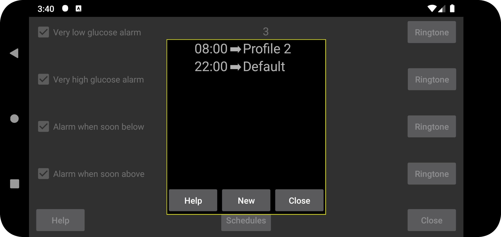
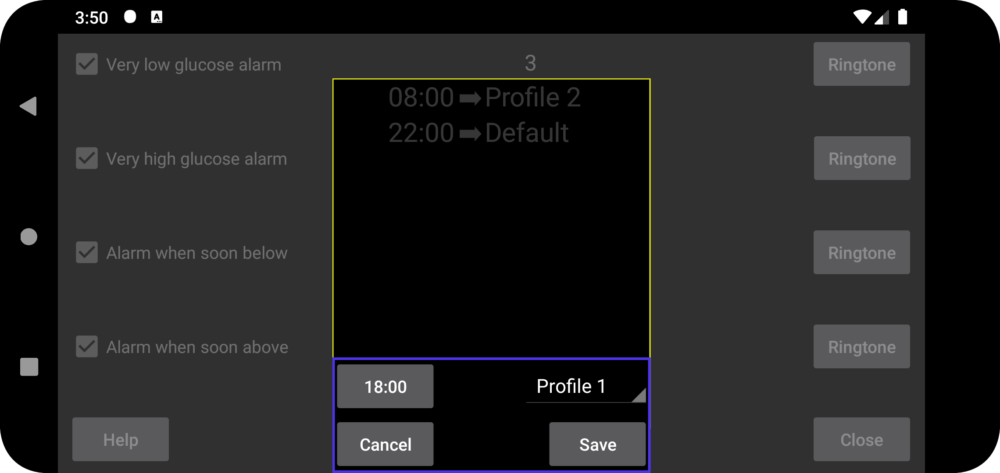

Schedule profiles to become active at a certain time. Press “New” to create an association between a certain time and a profile. Juggluco will switch every day to that profile at the specified time. You can edit a time profile association by touching it.
All settings for Alarms and Talk are specific to a common profile. Which one is active is shown under left menu → Settings → Alarms and left middle menu → Talk. At start the profile is “Default”, you can change it to “Profile 1” or “Profile 2” etc. What you specify in Alarm and Talk are specific for the active profile.